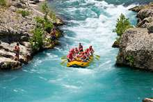
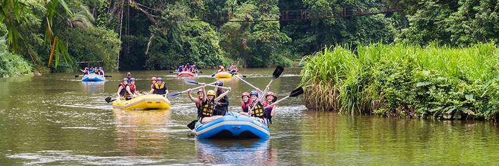
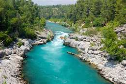
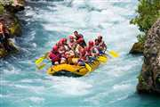
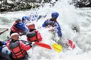
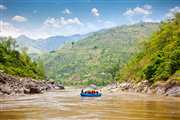
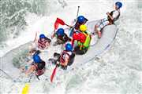
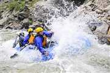

Our Mission

We create safe, high-energy river days that mix expert guidance, unforgettable scenery, and the kind of team moments people talk about long after the paddles are dry.


We create safe, high-energy river days that mix expert guidance, unforgettable scenery, and the kind of team moments people talk about long after the paddles are dry.
Summit Surge Rafting began with two guides, one yellow raft, and a promise that adventure should feel welcoming for first-timers and thrilling for seasoned paddlers alike. What started as a single weekend route quickly grew through word of mouth and repeat guests.

Today we run family floats, rapid-chasing day trips, and custom team outings across some of the region's most scenic water. Our focus is still the same: friendly guides, well-planned trips, and river experiences that feel bold, safe, and memorable.




